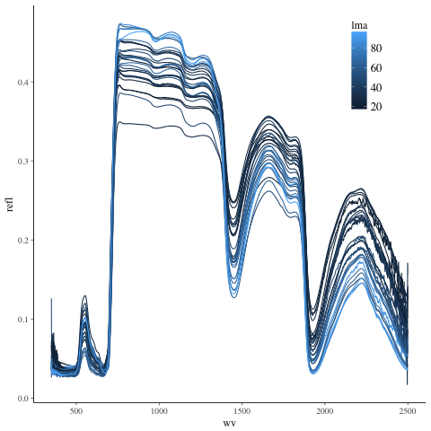
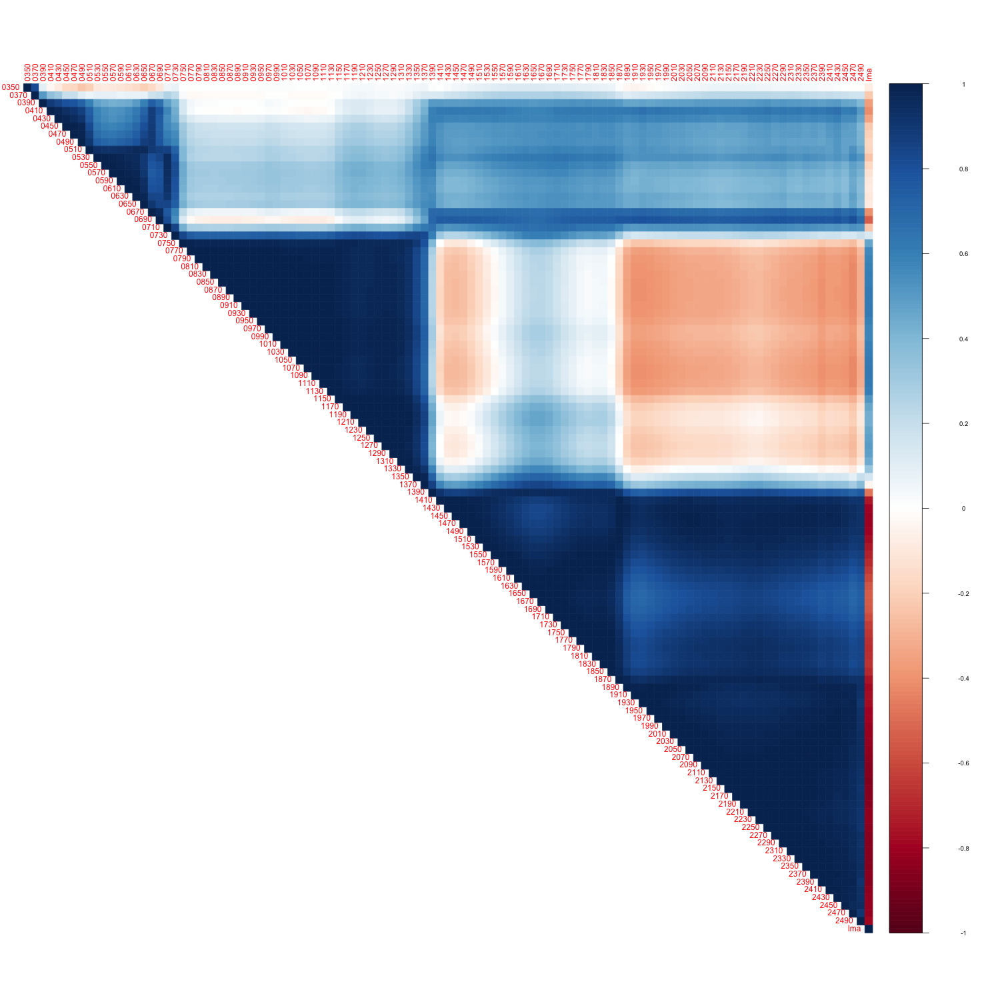

Estimate LMA from leaf spectra with regularized horseshoe prior (e.g. n < p model)
Table of Contents
Fitting n << p model. LMA ~ hyperspectral data
1 Regularized Horseshoe
1.1 libraries
library(rstanarm) library(readr) library(readxl) library(dplyr) library(ggplot2) library(tidyr) library(stringr) options(mc.cores = parallel::detectCores())
Loading required package: Rcpp
rstanarm (Version 2.17.2, packaged: 2017-12-20 23:59:28 UTC)
- Do not expect the default priors to remain the same in future rstanarm versions.
Thus, R scripts should specify priors explicitly, even if they are just the defaults.
- For execution on a local, multicore CPU with excess RAM we recommend calling
options(mc.cores = parallel::detectCores())
- Plotting theme set to bayesplot::theme_default().
Attaching package: ‘dplyr’
The following objects are masked from ‘package:stats’:
filter, lag
The following objects are masked from ‘package:base’:
intersect, setdiff, setequal, union
1.2 load data and look at a plot of sample
1.2.1 load data
These data come from this paper: https://doi.org/10.1890/13-2110.1. Important note: I don't really know the whole story behind these data, but they should work for the purposes of exploring the use of the horseshoe prior.
- obs unit, each row: a leaf identified by "sample"
- response: lma = leaf mass per area, a foliar trait.
- predictors, x = percent reflectance at a given wavelength. wavelengths are column names and are in nanometers.
lma <- read_excel("data/FFT_LMA.xlsx") colnames(lma) <- c("sample", "lma") #renames columns to be same as "x" names and simplify them x <- read_csv("data/FFT_Spectra_and_NIT_broadleaf.csv") cn <- colnames(x) colnames(x) <- ifelse(!grepl("^[0-9].*",cn), cn, paste0("X",cn)) # rename columns so they don't start with numbers x <- select(x, -nitrogen_percent) # drop nitrogen, not our target d <- left_join(lma, x)# join data
drop leaves for which we have no spectra (not sure why this is so).
dc <- dplyr::filter(d, complete.cases(d))
head(dc)
# A tibble: 6 x 2,153
sample lma X999 X998 X997 X996 X995
<chr> <dbl> <dbl> <dbl> <dbl> <dbl> <dbl>
1 NC03_FRAM_B 18.16374 0.4113146 0.4114115 0.4114785 0.4114507 0.4113866
2 PM01_FRPE_B 19.13258 0.4174238 0.4174014 0.4173028 0.4172584 0.4173062
3 PM02_OSVI_B 19.44623 0.3993568 0.3993150 0.3991895 0.3991744 0.3992724
4 BH03_CAOV_B 19.60146 0.3783291 0.3786360 0.3789238 0.3789275 0.3789690
5 BH07_OSVI_B 20.02637 0.3799481 0.3799939 0.3800162 0.3799387 0.3800192
6 BI03_OSVI_B 20.12972 0.4009787 0.4010846 0.4011427 0.4010872 0.4010471
# ... with 2146 more variables: X994 <dbl>, X993 <dbl>, X992 <dbl>, X991 <dbl>,
# X990 <dbl>, X989 <dbl>, X988 <dbl>, X987 <dbl>, X986 <dbl>, X985 <dbl>,
# X984 <dbl>, X983 <dbl>, X982 <dbl>, X981 <dbl>, X980 <dbl>, X979 <dbl>,
# X978 <dbl>, X977 <dbl>, X976 <dbl>, X975 <dbl>, X974 <dbl>, X973 <dbl>,
# X972 <dbl>, X971 <dbl>, X970 <dbl>, X969 <dbl>, X968 <dbl>, X967 <dbl>,
# X966 <dbl>, X965 <dbl>, X964 <dbl>, X963 <dbl>, X962 <dbl>, X961 <dbl>,
# X960 <dbl>, X959 <dbl>, X958 <dbl>, X957 <dbl>, X956 <dbl>, X955 <dbl>,
# X954 <dbl>, X953 <dbl>, X952 <dbl>, X951 <dbl>, X950 <dbl>, X949 <dbl>,
# X948 <dbl>, X947 <dbl>, X946 <dbl>, X945 <dbl>, X944 <dbl>, X943 <dbl>,
# X942 <dbl>, X941 <dbl>, X940 <dbl>, X939 <dbl>, X938 <dbl>, X937 <dbl>,
# X936 <dbl>, X935 <dbl>, X934 <dbl>, X933 <dbl>, X932 <dbl>, X931 <dbl>,
# X930 <dbl>, X929 <dbl>, X928 <dbl>, X927 <dbl>, X926 <dbl>, X925 <dbl>,
# X924 <dbl>, X923 <dbl>, X922 <dbl>, X921 <dbl>, X920 <dbl>, X919 <dbl>,
# X918 <dbl>, X917 <dbl>, X916 <dbl>, X915 <dbl>, X914 <dbl>, X913 <dbl>,
# X912 <dbl>, X911 <dbl>, X910 <dbl>, X909 <dbl>, X908 <dbl>, X907 <dbl>,
# X906 <dbl>, X905 <dbl>, X904 <dbl>, X903 <dbl>, X902 <dbl>, X901 <dbl>,
# X900 <dbl>, X899 <dbl>, X898 <dbl>, X897 <dbl>, X896 <dbl>, X895 <dbl>, ...
1.2.2 plot data
reshape data for plotting
dcr <- dc %>% sample_n(., 30) %>% gather(key = wv, value = refl, -sample, -lma) dcr <- dcr %>% rowwise() %>% mutate(wv = as.numeric(str_sub(wv, 2, nchar(wv))))

If you want to look at the plot in plotly
#library(plotly) #ggplotly(p, dynamicTicks = T)
much the discrimination of leaf lma appears to happen in the SWIR (greater than ~1500nm). Also, there are a handful of spectra in the sample of 30 that are pretty noisy out in the SWIR.
x's are very correlated. The response, lma, is the last column. The figure is bigt so the wavelength names are clear
library(corrplot) a <- spread(dcr, key = wv, value = refl) colnames(a)[-2] <- ifelse(nchar(colnames(a)[-2]) == 3, paste0("0",colnames(a)[-2]), colnames(a)[-2]) # to make alphabetic ordering work right a[,c(2,seq(3,ncol(a),20))] %>% cor %>% corrplot(order = "alphabet", type = "upper", method = "color")

1.3 fitting model with horseshoe prior on coefficients
dim(dc)
[1] 302 2153
I'll subset the data for faster fitting during the exploratory phase
n <- 50 # number of observations to sample p <- 80 # number of wavelengths to sample rows <- sample(1:nrow(dc),n) cols <- sample(3:ncol(dc),p) dcs <- dc[rows, c(2,cols)] # make sure I keep column 2, which contains the target response, lma.
dim(dcs)
[1] 50 81
center the response, lma
lma_center <- mean(dcs$lma) dcs$lma <- dcs$lma - lma_center
caluculate τ0
p0 <- 5 # prior guess for the number of non zero coefficients sigmaguess <- 5 # guess for sigma of gaussian response tau0 <- p0 / (p - p0) * sigmaguess/sqrt(n) tau0
[1] 0.04714045
tau0 is [1] 0.04714045
fit <- stan_glm(lma ~ ., data = dcs, gaussian(), prior = hs(global_scale=tau0), prior_intercept = normal())
SAMPLING FOR MODEL 'continuous' NOW (CHAIN 1).
Gradient evaluation took 0.00033 seconds
1000 transitions using 10 leapfrog steps per transition would take 3.3 seconds.
Adjust your expectations accordingly!
Iteration: 1 / 2000 [ 0%] (Warmup)
SAMPLING FOR MODEL 'continuous' NOW (CHAIN 2).
Gradient evaluation took 0.000366 seconds
1000 transitions using 10 leapfrog steps per transition would take 3.66 seconds.
Adjust your expectations accordingly!
Iteration: 1 / 2000 [ 0%] (Warmup)
SAMPLING FOR MODEL 'continuous' NOW (CHAIN 3).
Gradient evaluation took 0.000391 seconds
1000 transitions using 10 leapfrog steps per transition would take 3.91 seconds.
Adjust your expectations accordingly!
Iteration: 1 / 2000 [ 0%] (Warmup)
SAMPLING FOR MODEL 'continuous' NOW (CHAIN 4).
Gradient evaluation took 0.000403 seconds
1000 transitions using 10 leapfrog steps per transition would take 4.03 seconds.
Adjust your expectations accordingly!
Iteration: 1 / 2000 [ 0%] (Warmup)
Iteration: 200 / 2000 [ 10%] (Warmup)
Iteration: 200 / 2000 [ 10%] (Warmup)
Iteration: 200 / 2000 [ 10%] (Warmup)
Iteration: 400 / 2000 [ 20%] (Warmup)
Iteration: 400 / 2000 [ 20%] (Warmup)
Iteration: 400 / 2000 [ 20%] (Warmup)
Iteration: 600 / 2000 [ 30%] (Warmup)
Iteration: 200 / 2000 [ 10%] (Warmup)
Iteration: 600 / 2000 [ 30%] (Warmup)
Iteration: 800 / 2000 [ 40%] (Warmup)
Iteration: 600 / 2000 [ 30%] (Warmup)
Iteration: 800 / 2000 [ 40%] (Warmup)
Iteration: 1000 / 2000 [ 50%] (Warmup)
Iteration: 1001 / 2000 [ 50%] (Sampling)
Iteration: 400 / 2000 [ 20%] (Warmup)
Iteration: 800 / 2000 [ 40%] (Warmup)
Iteration: 600 / 2000 [ 30%] (Warmup)
Iteration: 1000 / 2000 [ 50%] (Warmup)
Iteration: 1001 / 2000 [ 50%] (Sampling)
Iteration: 1200 / 2000 [ 60%] (Sampling)
Iteration: 1000 / 2000 [ 50%] (Warmup)
Iteration: 1001 / 2000 [ 50%] (Sampling)
Iteration: 800 / 2000 [ 40%] (Warmup)
Iteration: 1200 / 2000 [ 60%] (Sampling)
Iteration: 1400 / 2000 [ 70%] (Sampling)
Iteration: 1200 / 2000 [ 60%] (Sampling)
Iteration: 1000 / 2000 [ 50%] (Warmup)
Iteration: 1001 / 2000 [ 50%] (Sampling)
Iteration: 1400 / 2000 [ 70%] (Sampling)
Iteration: 1600 / 2000 [ 80%] (Sampling)
Iteration: 1400 / 2000 [ 70%] (Sampling)
Iteration: 1200 / 2000 [ 60%] (Sampling)
Iteration: 1600 / 2000 [ 80%] (Sampling)
Iteration: 1800 / 2000 [ 90%] (Sampling)
Iteration: 1600 / 2000 [ 80%] (Sampling)
Iteration: 1400 / 2000 [ 70%] (Sampling)
Iteration: 1800 / 2000 [ 90%] (Sampling)
Iteration: 2000 / 2000 [100%] (Sampling)
Elapsed Time: 11.0892 seconds (Warm-up)
12.0994 seconds (Sampling)
23.1886 seconds (Total)
Iteration: 1800 / 2000 [ 90%] (Sampling)
Iteration: 1600 / 2000 [ 80%] (Sampling)
Iteration: 2000 / 2000 [100%] (Sampling)
Elapsed Time: 12.445 seconds (Warm-up)
11.6852 seconds (Sampling)
24.1303 seconds (Total)
Iteration: 2000 / 2000 [100%] (Sampling)
Elapsed Time: 15.2933 seconds (Warm-up)
11.6306 seconds (Sampling)
26.9239 seconds (Total)
Iteration: 1800 / 2000 [ 90%] (Sampling)
Iteration: 2000 / 2000 [100%] (Sampling)
Elapsed Time: 17.1099 seconds (Warm-up)
10.9514 seconds (Sampling)
28.0612 seconds (Total)
All the diagnotics look good. Most neffs are 4000, Rhats are 1.0.
The coefficients aren't shrunk towards zero like I would have expected. Is this due to the nature of the data, or how I specified the model? I expected more shrinkage towards 0 and a few standout predictors.
I've tested p0 values from 1 to 50 and the results are very similar.
1.3.1 predict with model
unsampledrows <- (1:nrow(dc))[!1:nrow(dc) %in% rows] newrows <- sample(unsampledrows, 50) newdata <- dc[newrows, c(2,cols)] y_rep <- posterior_predict(fit, newdata) predictions_mean <- apply(y_rep, 2, mean) + lma_center
RMSE prediction
sqrt(mean((newdata$lma - predictions_mean)^2))
[1] 11.9029
1.4 fitting model with gaussian prior on coefficients
fit_gaus <- stan_glm(lma ~ ., data = dcs, gaussian(), prior = normal())
SAMPLING FOR MODEL 'continuous' NOW (CHAIN 1).
Gradient evaluation took 0.000195 seconds
1000 transitions using 10 leapfrog steps per transition would take 1.95 seconds.
Adjust your expectations accordingly!
Iteration: 1 / 2000 [ 0%] (Warmup)
SAMPLING FOR MODEL 'continuous' NOW (CHAIN 2).
Gradient evaluation took 0.000258 seconds
1000 transitions using 10 leapfrog steps per transition would take 2.58 seconds.
Adjust your expectations accordingly!
Iteration: 1 / 2000 [ 0%] (Warmup)
SAMPLING FOR MODEL 'continuous' NOW (CHAIN 3).
Gradient evaluation took 0.000248 seconds
1000 transitions using 10 leapfrog steps per transition would take 2.48 seconds.
Adjust your expectations accordingly!
Iteration: 1 / 2000 [ 0%] (Warmup)
SAMPLING FOR MODEL 'continuous' NOW (CHAIN 4).
Gradient evaluation took 0.000271 seconds
1000 transitions using 10 leapfrog steps per transition would take 2.71 seconds.
Adjust your expectations accordingly!
Iteration: 1 / 2000 [ 0%] (Warmup)
Iteration: 200 / 2000 [ 10%] (Warmup)
Iteration: 200 / 2000 [ 10%] (Warmup)
Iteration: 200 / 2000 [ 10%] (Warmup)
Iteration: 200 / 2000 [ 10%] (Warmup)
Iteration: 400 / 2000 [ 20%] (Warmup)
Iteration: 400 / 2000 [ 20%] (Warmup)
Iteration: 400 / 2000 [ 20%] (Warmup)
Iteration: 400 / 2000 [ 20%] (Warmup)
Iteration: 600 / 2000 [ 30%] (Warmup)
Iteration: 600 / 2000 [ 30%] (Warmup)
Iteration: 600 / 2000 [ 30%] (Warmup)
Iteration: 800 / 2000 [ 40%] (Warmup)
Iteration: 600 / 2000 [ 30%] (Warmup)
Iteration: 800 / 2000 [ 40%] (Warmup)
Iteration: 800 / 2000 [ 40%] (Warmup)
Iteration: 800 / 2000 [ 40%] (Warmup)
Iteration: 1000 / 2000 [ 50%] (Warmup)
Iteration: 1001 / 2000 [ 50%] (Sampling)
Iteration: 1000 / 2000 [ 50%] (Warmup)
Iteration: 1001 / 2000 [ 50%] (Sampling)
Iteration: 1000 / 2000 [ 50%] (Warmup)
Iteration: 1001 / 2000 [ 50%] (Sampling)
Iteration: 1000 / 2000 [ 50%] (Warmup)
Iteration: 1001 / 2000 [ 50%] (Sampling)
Iteration: 1200 / 2000 [ 60%] (Sampling)
Iteration: 1200 / 2000 [ 60%] (Sampling)
Iteration: 1200 / 2000 [ 60%] (Sampling)
Iteration: 1400 / 2000 [ 70%] (Sampling)
Iteration: 1200 / 2000 [ 60%] (Sampling)
Iteration: 1400 / 2000 [ 70%] (Sampling)
Iteration: 1600 / 2000 [ 80%] (Sampling)
Iteration: 1400 / 2000 [ 70%] (Sampling)
Iteration: 1800 / 2000 [ 90%] (Sampling)
Iteration: 1600 / 2000 [ 80%] (Sampling)
Iteration: 1400 / 2000 [ 70%] (Sampling)
Iteration: 2000 / 2000 [100%] (Sampling)
Elapsed Time: 55.4148 seconds (Warm-up)
45.1006 seconds (Sampling)
100.515 seconds (Total)
Iteration: 1600 / 2000 [ 80%] (Sampling)
Iteration: 1800 / 2000 [ 90%] (Sampling)
Iteration: 1600 / 2000 [ 80%] (Sampling)
Iteration: 2000 / 2000 [100%] (Sampling)
Elapsed Time: 56.737 seconds (Warm-up)
56.4095 seconds (Sampling)
113.147 seconds (Total)
Iteration: 1800 / 2000 [ 90%] (Sampling)
Iteration: 1800 / 2000 [ 90%] (Sampling)
Iteration: 2000 / 2000 [100%] (Sampling)
Elapsed Time: 54.3435 seconds (Warm-up)
71.0201 seconds (Sampling)
125.364 seconds (Total)
Iteration: 2000 / 2000 [100%] (Sampling)
Elapsed Time: 63.2991 seconds (Warm-up)
67.2472 seconds (Sampling)
130.546 seconds (Total)
All the diagnotics look good. Most neffs are 4000, Rhats are 1.0.
this looks more like what I expected from the horseshoe prior. What am I missing?
1.4.1 predict with model
y_rep_gaus <- posterior_predict(fit_gaus, newdata) predictions_mean_gaus <- apply(y_rep_gaus, 2, mean) + lma_center
RMSE prediction
sqrt(mean((newdata$lma - predictions_mean_gaus)^2))
[1] 11.50409
1.5 OLS with a few wavelengths as predictors
There is plenty of information in the data to estimate lma. Picking the first 4 randomly selected wavelengths does a fine job.
dcss <- dcs[,1:5] m <- lm(lma ~ ., dcss)
summary(m)
Call:
lm(formula = lma ~ ., data = dcss)
Residuals:
Min 1Q Median 3Q Max
-14.6340 -4.7781 -0.6099 5.4627 14.8608
Coefficients:
Estimate Std. Error t value Pr(>|t|)
(Intercept) 2.015 19.867 0.101 0.9197
X2406 272.151 158.902 1.713 0.0937 .
X1761 -1180.422 188.178 -6.273 1.23e-07 ***
X1329 814.137 119.195 6.830 1.82e-08 ***
X645 -245.982 206.772 -1.190 0.2404
---
Signif. codes: 0 ‘***’ 0.001 ‘**’ 0.01 ‘*’ 0.05 ‘.’ 0.1 ‘ ’ 1
Residual standard error: 7.01 on 45 degrees of freedom
Multiple R-squared: 0.911, Adjusted R-squared: 0.9031
F-statistic: 115.2 on 4 and 45 DF, p-value: < 2.2e-16
lm_newdata <- dc[newrows,colnames(dcss)] lm_predict <- predict(m, lm_newdata)
sqrt(mean((lm_newdata$lma - lm_predict)^2))
[1] 56.76659
2 some references
see these slides https://github.com/avehtari/modelselection_tutorial/blob/master/regularizedhorseshoe_slides.pdf
see this paper https://arxiv.org/pdf/1707.01694.pdf
gelman blog post http://andrewgelman.com/2017/02/14/lasso-regression-etc-stan/